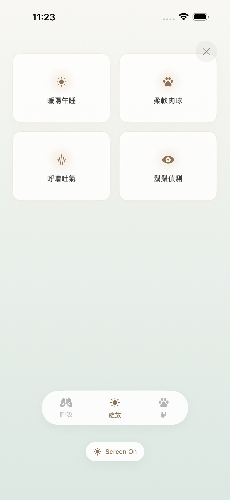
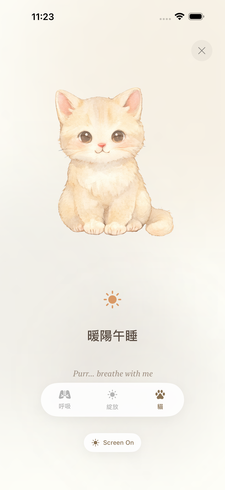
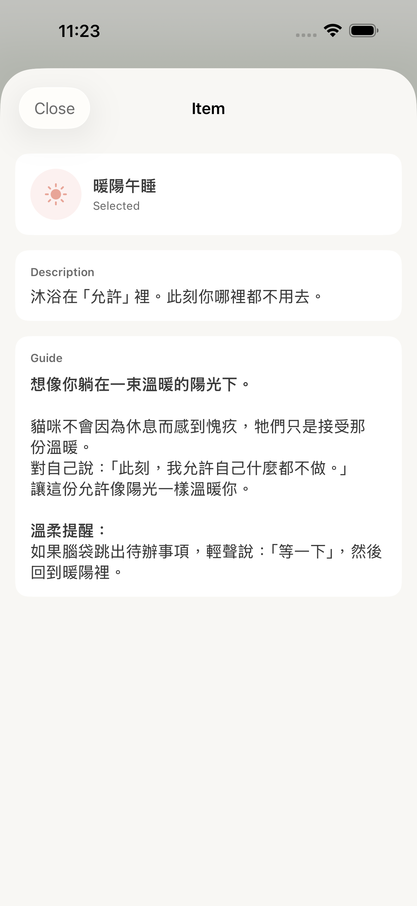

01
選擇當下狀態
JustBe 為不同的生活場景準備了「收藏集」(Collections)。這不是任務清單，而是對當下狀態的溫柔回應。
試試 Daily Core 進行日常練習，或在感到焦慮時選擇 The Anchor。

02
開始與自己相處
點擊 Start Session。這不是考試，沒有標準答案。只需允許自己沉浸在光影與聲音中。


點擊螢幕可隱藏界面，只保留純粹的陪伴。
03
探索練習項目
在專注時段中，螢幕上會出現練習項目的文字。點擊任何一個文字，即可查看完整的練習說明。

每個練習都包含 Description（簡介）和 Guide（完整引導），幫助您更深入地理解和體驗。
溫馨提醒
JustBe 移除了所有「壓力源」：沒有連續打卡，沒有分數，沒有通知紅點。請依照您的節奏，在需要的時候回來。